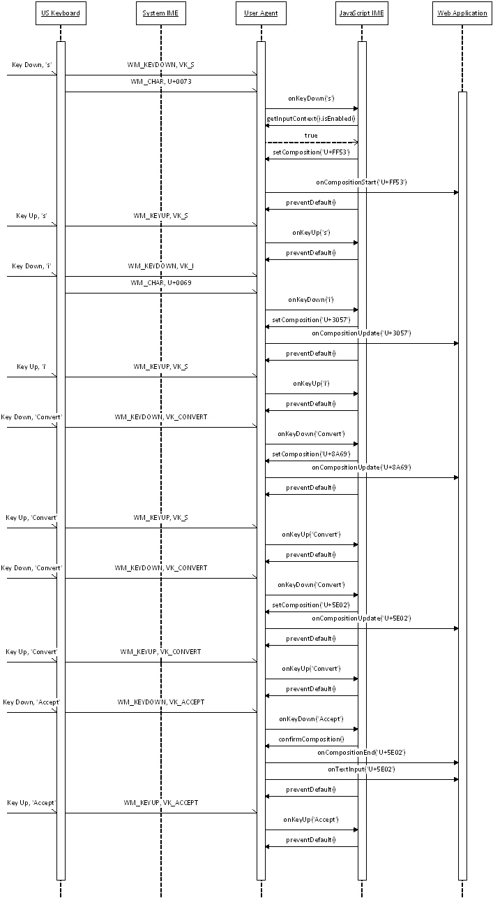
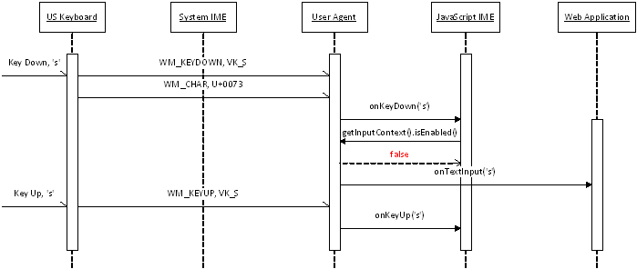
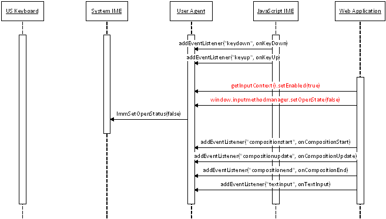

This specification defines an “IME API” that provides Web applications
with scripted access to an IME (input-method editor)
associated with a hosting user agent. This IME API includes:
An InputMethodContext interface, which provides methods to
retrieve detailed data from an in-progress IME
composition,
and to update that data.
A Composition dictionary, which represents read-only attributes
about the current
composition,
such as the actual text being input, its length, and its target
clause.
need to define what a clause is
This API is designed to be used in conjunction with DOM events and
elements on the Web platform, notably: composition events and the
Canvas 2D Context API
[[CANVAS-2D]].
This document is a proposal that is being made available for public
review in order to solicit feedback, particularly from
implementors, with a goal of potential cross-browser implementation
and standardization.
Introduction
Even though existing Web-platform APIs allow developers to implement very
complicated Web applications, such as visual chat applications, using
technologies such as SVG or the <canvas> element and API,
developers have difficulties when implementing Web applications that
control input-method editors. To provide the
ability for hosting user agents to expose Web applications to the
composition text
being composed in an associated IME,
the DOM Level 3 Events specification
[[DOM-LEVEL-3-EVENTS]]
introduces composition events. Using composition events, Web
applications can retrieve
composition text
from an IME.
However, Web applications can still run into difficulties when
they manipulate IMEs on non-editable elements such as the
<canvas> element; those difficulties include the fact
that a Web application cannot do the following:
indicate to the user whether the Web application renders
composition text by itself, or needs to ask user agents to render it
determine the place where user agents render composition text
detect whether the user agent renders
candidate windows
by themselves
The Web platform has a number of existing APIs useful for
implementing a custom IME in JavaScript. For example, the Web Storage
API can store an IME dictionary, and the WebSocket and XMLHttpRequest APIs
allow sending a server request that performs a lookup in an IME dictionary,
and so on. In fact, Web-application developers are already developing and
deploying JavaScript-based IMEs that use these APIs. However, it is
currently difficult to make those JavaScript-based IMEs work on all user
agents, because they often rely on APIs specific to the hosting user agent,
such as browser extension APIs.
To solve these IME-related problems, this specification introduces
an IME API that allows Web applications to read and write composition
data made available by user agents. Moreover, this specification introduces
interfaces for
compositions,
so Web applications can read detailed composition
data and update it. A Composition object provides a reference
to an ongoing IME
composition,
so Web applications can retrieve the composition text and attributes.
The use of those APIs allows Web applications the ability to set the
position of a composition window
and to retrieve the text and attributes of the ongoing
composition.
Consider the following examples. The first example shows the
source for a Web application that renders composition text by itself
and uses the
candidate window
provided by an IME.
<!DOCTYPE html>
<html>
<head>
<script language="javascript" type="text/javascript">
function init() {
document.getInputContext().setOpenState(true);
var node = document.getElementById('canvas0');
node.getInputContext().setEnable(true);
node.addEventListener('compositionstart', onCompositionStart, false);
node.addEventListener('compositionupdate', onCompositionUpdate, false);
node.addEventListener('compositionend', onCompositionEnd, false);
}
function onCompositionStart(event) {
}
function onCompositionUpdate(event) {
var x = 0;
var y = 0;
var canvas = document.getElementById('canvas0');
var context = canvas.getContext('2d');
var inputContext = canvas.getInputContext();
var composition = inputContext.composition;
// Render a caret.
// NOTE: this just renders a caret rectangle in black for
// simplicity.
if (composition.caret.start >= 0) {
var start = context.measureText(
composition.text.substring(0, composition.caret.start));
var end = context.measureText(
composition.text.substring(0, composition.caret.end));
context.fillStyle = ’black’;
context.fillRect(start.width, y, end.width, y + 10);
}
// Render the clauses in the composition.
for (var i = 0; i < composition.clauses.length; ++i) {
var text = composition.clauses[i].text;
var metrics = context.measureText(text);
// Draw the text of this clause.
context.fillStyle = composition.clauses[i].textColor;
context.fillText(text, x, y);
// Draw an underline under the text. For simplicity, this code
// draws a bold underline for selected clauses or a thin
// underline for non-selected ones.
if (composition.clauses[i].selected) {
context.fillRect(x, y, x + metrics.width, y + 2);
} else {
context.fillRect(x, y, x + metrics.width, y + 1);
}
x += metrics.width;
}
// Move the candidate window outside of the composition text.
window.inputmethodmanager.moveCandidateWindow(0, y, x, y + 10);
}
function onCompositionEnd(event) {
}
</script>
</head>
<body>
<canvas id=”canvas0” width=”640” height=”480”></canvas>
</body>
</html>
The next example shows the source for a simple IME that composes
Japanese Hiragana characters from key strokes.
This is just a sample and not suitable for real use.
<!DOCTYPE html>
<html>
<head>
<title></title>
<script language="javascript" type="text/javascript">
var imeActivated = false;
var imeRomajiInput = '';
var imeRomajiTable = {
'A': '\u3042', 'I': '\u3044', 'U': '\u3046', 'E': '\u3048', 'O': '\u304A',
/* suppressed */
};
function init() {
// Disable the system IME associated with this window.
window.inputmethodmanager.setOpenState(false);
// Listens the keyboard events.
var node = document.getElementById('input0');
node.addEventListener('keydown', onKeyDown, false);
node.addEventListener('keyup', onKeyUp, false);
}
function onKeyDown(event) {
// Toggle the input mode when pressing a shift key.
if (event.key == 'Shift') {
imeActivated = !imeActivated;
imeRomajiInput = '';
}
// Exit if this IME is not activated.
if (!imeActivated)
return true;
var imeComposition = new Composition;
var imeConfirm = false;
if (event.keyCode < 0x20) {
event.preventDefault();
return true;
}
// Convert the input key strokes to a Japanese character.
imeRomajiInput += String.fromCharCode(event.keyCode);
if (imeRomajiTable[imeRomajiInput]) {
imeComposition.text = imeRomajiTable[imeRomajiInput];
imeConfirm = true;
imeRomajiInput = '';
} else {
imeComposition.text = imeRomajiInput;
}
// Fill the Composition object.
imeComposition.caret.start = imeComposition.text.length;
imeComposition.caret.length = 1;
imeComposition.clauses[0] = new CompositionClause;
imeComposition.clauses[0].text = imeComposition.text;
imeComposition.clauses[0].start = 0;
imeComposition.clauses[0].selected = true;
imeComposition.clauses[0].textColor = 'currentColor';
imeComposition.clauses[0].backgroundColor = 'transparent';
imeComposition.clauses[0].lineStyle = 'solid';
imeComposition.clauses[0].lineColor = 'black';
// Send the Composition object to the user agent.
var context = event.target.getInputContext();
context.setComposition(imeComposition);
if (imeConfirm)
context.confirmComposition();
// Disable the default action to prevent this key from being
// inserted.
event.preventDefault();
return false;
}
function onKeyUp(event) {
}
</script>
</head>
<body onload="init();">
<textarea id="input0" cols="80" rows="10"></textarea>
</body>
</html>
Background: What’s an Input Method Editor?
An IME (input-method editor) is an application
that allows a standard keyboard (such as a US-101 keyboard) to be used to
type characters and symbols that are not directly represented on the
keyboard itself. In China, Japan, and Korea, IMEs are used ubiquitously to
enable standard keyboards to be employed to type the very large number
of characters required for writing in Chinese, Japanese, and Korean.
A composer is a context-free parser that
composes non-ASCII characters (including phonetic characters) from
keystrokes.
A converter is a context-sensitive parser that looks up a
dictionary to convert phonetic characters to a set of ideographic
characters.
An IME clause is a grammatical word produced in an IME.
An IME selected clause is an IME clause being composed by an IME.
An IME composition
is an instance of text produced in an IME. For IMEs that can produce multiple words, an IME composition consists of multiple IME clauses. For IMEs that produce only one word, an IME composition is equal to an IME clause.
When an IME receives keystrokes, it sends the keystrokes to a
composer and receives phonetic characters matching to the keystrokes. When
an IME receives phonetic characters from a composer, it sends the phonetic
characters to a converter and receives the list of ideographic characters
matching to the phonetic characters. The following figure shows the
basic structure of an IME.
A phonetic composer composes a phonetic
character from its ASCII representation.
A radical composer composes a
phonetic character from phonetic radicals.
A phonetic radical is a character component of a Latin character, a Chinese character, or a Korean character. A Latin character consists of an ASCII character and accent marks, e.g. a character 'á' consists of an ASCII character 'a' and an accent mark '´'. A Chinese character consists of Chinese character components that refer to its semantic origins, e.g. a Chinese character '略' consists of two components '田' and '各'. A Korean character consists of Korean character components that represent consonants or vowels, e.g. a Korean character '가' consists of a consonant 'ㄱ' and a vowel 'ㅏ'.
An IME usually shows the text
being composed by a composer with its own style to distinguish it from the
existing text. Even though most of composers output phonetic characters,
some composers (such as Bopomofo composers) output a placeholder character
instead of phonetic characters while composing text.
need to define composition window
probably should define radical
probably should define clause here too
Phonetic composer
Phonetic composers are not only used for typing Simplified
Chinese and Japanese, but also used for typing non-ASCII characters (such
as mathematical symbols, Yi, Amharic, etc.) with a US-101 keyboard. Each of
these languages has a mapping table from its character to a sequence of
ASCII characters representing its pronunciation: e.g.,
‘か’ to ‘ka’ in Japanese, and;
‘卡’ to ‘ka’ in Simplified Chinese. This
mapping table is called as Romaji for Japanese and Pinyin for Simplified
Chinese, respectively. A phonetic composer uses these mapping tables to
compose a phonetic character from a sequence of ASCII characters produced
by a US keyboard.
A phonetic composer for Simplified Chinese outputs the input
ASCII characters as its composition text.
Composition text (Simplified Chinese)
On the other hand, a phonetic composer for Japanese outputs
phonetic characters when the input ASCII characters have matching phonetic
characters.
Composition text (Japanese)
A phonetic composer for mathematical symbols outputs a
composed mathematical symbol and shows the source keystrokes to its own
window, which is an example of a composition window.
Composition text (Latex input)
Radical composer
Radical composers are mainly used for typing Traditional
Chinese and Korean with phonetic keyboards. Each phonetic keyboard of these
languages can produce phonetic radicals: e.g., typing ‘r’
produces ‘ㄱ’ on a Korean keyboard; typing
‘o’ produces ‘人’ on a Traditional-Chinese
(or Bopomofo) keyboard, etc. A radical composer composes a phonetic
character from phonetic radicals given by these keyboards: e.g., typing
'ㄱ' (r) and 'ㅏ' (k) produces '가' on a Korean keyboard;
typing ‘人’ (o), ‘弓’ (n), and
‘火’ (f) produces ‘你’ on a
Traditional-Chinese keyboard, etc.
A radical composer for Korean outputs the phonetic radicals as
its composition text.
Radical composer (Korean)
A radical composer for Traditional Chinese outputs a
placeholder character (U+3000) and shows the phonetic radicals being
composed to its own window. This window is an example of a composition
window.
Radical composer (Traditional Chinese)
Some platforms (such as Mac and Linux) use radical composers
for typing accented characters used in European countries. For example,
typing ‘ ̈ ’ (option+u) and ‘a’ (a) produces
‘ä’ on US keyboards of Mac.
Radical composer (Mac)
Converter
A converter is a context-sensitive parser used for replacing
the outputs of a composer to ideographic characters on Chinese, Japanese,
and Korean.
Korean does not use ideographic characters so often.
Because Chinese, Japanese, and Korean have many homonyms, each sequence of phonetic
characters usually matches many ideographic characters: e.g., a Japanese
phonetic character 'か' matches Japanese ideographic characters
‘化’, ‘科’, ‘課’,
etc.; Pinyin characters ‘ka’ matches Simplified-Chinese
ideographic characters ‘卡', ‘喀’,
‘咯’, etc.; Bopomofo characters
‘人弓’ matches Traditional-Chinese ideographic
characters ‘乞’, ‘亿’,
‘亇’, etc.
A converter looks up a dictionary and shows a
list of candidates of possible ideographic characters so a user can choose
one. This list is known as a candidate list.
A candidate list is known as a candidate window
when it has its own window.
Some Japanese IMEs show annotations in its candidate window
for a character that is not so easy to distinguish from other characters
(such as full-width alphabets, full-width Katakanas, and half-width
Katakanas, etc.), as shown in the following figure.
Candidate window (Japanese)
The next figure shows a candidate window of a Simplified-Chinese IME.
Candidate window (Simplified Chinese)
And the next figure shows a candidate window of a Traditional-Chinese IME.
Candidate window (Traditional Chinese)
A converter often integrates an MRU (Most-Recently Used) list.
Even though there are many ideographic characters for each phonetic
character (or phonetic radical), a user does not usually use all these
ideographic characters. A converter uses an MRU list to filter out
ideographic characters not used so often from a
candidate list.
A converter
sometimes integrates a grammar parser. A converter that integrates a
grammar parser splits the given phonetic characters into grammatical
clauses and converts only one clause at once. When a sequence of phonetic
characters consists of n clauses and the i-th clause has m_i candidates,
the total number of the candidates for the input characters become (m_1 *
m_2 * … * m_n). To reduce the number of candidates owned by a
converter, a converter usually processes one clause at once. This clause is
called as a selected clause.
An IME usually renders a selected clause with
a special style to distinguish it from other clauses, as shown in
the following figure.
Selected clause (Japanese)
When a converter converts two or more clauses, it chooses
candidates for the selected clause so it becomes grammatically consistent
with the surrounding clauses: e.g., Japanese converters usually output
‘危機一髪’ (not
‘危機一発’) for Japanese phonetic
characters ‘ききいっぱつ’
because ‘危機一発’ is grammatically
incorrect.
More to be written.
Terminology and algorithms
To be written.
The getInputContext() method
For each element, a user agent can choose an IME for the element.
To control the IME attached to an element, it is a good idea to add a
method to the HTMLElement interface.
If the
getInputContext()
method cannot be added to the HTMLElement
interface, it should be moved to the InputMethodContext interface.
InputMethodContext getInputContext()
Returns an InputMethodContext interface associated with this element. By
default, a user agent returns an InputMethodContext interface representing
the system IME. To change the behavior of the IME associated with an
element, authors must first obtain an InputMethodContext interface by
calling the getInputContext() method of the HTMLElement interface.
The Composition Dictionary
This dictionary represents an ongoing IME composition. It provides
an attribute representing the text being composed by an IME. It also
provides a method to retrieve attributes of the specified character in the
composition text.
readonly attribute Node text
Represents the styled text being composed by an IME. This node may
have child nodes, e.g. when an IME
composition consists of multiple IME clauses,
this node has child nodes and each child node represents an
IME clause. The text attribute of this node
is equal to the text
attribute of a compositionupdate event.
Represents the text being composed by an IME. This string is
equal to the text attribute of a compositionupdate event.
readonly attribute Range caret
Represents the caret in this composition text. The
CommonAncestorContainer attribute of this range should be text
The InputMethodContext Interface
readonly attribute DOMString source
Represents the name of the IME associated with this context.
readonly attribute Composition composition
Represents the detailed information of the ongoing IME
composition. When an IME is not composing text, this value MUST be
null.
boolean setEnabled(in boolean enabled)
Controls the state of the IME associated with this context.
The enabled parameter represents whether a user agent
activates this IME when the given node gains the input focus. When this
value is true, a user agent activates an IME when this node gains the input
focus and sends composition events to the given node even though the node
is not an editable one, such as a <canvas> element.
boolean isEnabled()
Returns the state of the IME associated with this context.
boolean hasComposition()
Returns true when the hosting user agent is composing text.
This function is just copied from WebKit, to solicit opinions
from developers of JavaScript-based IMEs.
void setComposition(Composition composition)
Updates the composition information of the hosting user agent.
When a JavaScript-based IME starts a composition, it MUST call
this function with the appropriate composition information. When a
JavaScript-based IME cancels an ongoing composition, it MUST call this
function with a composition object whose text is empty. A user agent
sends a compositionstart event when this function is called while
hasComposition() returns false. On the other hand, a
user agent sends a compositionupdate event when a Web application calls
this function while hasComposition() returns true.
This function is just copied from WebKit, to solicit opinions
from developers of JavaScript-based IMEs.
The composition parameter represents the
information of the new composition.
void confirmComposition()
Finishes the ongoing composition of the hosting user agent.
This function is just copied from WebKit, to solicit opinions
from developers of JavaScript-based IMEs.
void setCaretRectangle(int x, int y, int w, int h)
Notifies the rectangle of composition text to a user agent. When
a user agent renders a
candidate window
or a composition window, it uses
this rectangle to prevent these windows from being rendered on this
rectangle.
On Windows, this rectangle is used as a parameter for
ImmSetCandidateWindow(). On Mac, this rectangle is sent when it calls
[firstRectForCharacterRange:]. On Linux (GTK), this rectangle is used as a
parameter for gtk_im_context_set_cursor_location().
The x, y, w, and h
parameters represent the local coordinates of a
composition-text rectangle. A user agent MAY need to convert these
coordinates to the screen coordinates when it shows a
candidate window.
boolean setOpenState(boolean open)
Controls the state of the IME currently associated with the hosting
user agent. This function returns true if a user agent can activate or
deactivate its associated IME.
The open parameter represents whether a user agent
enables the IME and disables it.
Do we need to notice this event to JavaScript IMEs? If
so, what is the best option?
Best practices
This specification provides two types of interfaces:
Interfaces for developing IMEs in JavaScript (JavaScript IMEs)
Interfaces for developing Web applications that are aware of IMEs
(IME-aware Web applications).
Moreover, this API depends on several existing specifications to
minimize the change for existing JavaScript IMEs.
These dependencies make developers harder to use this API in their
JavaScript IMEs or IME-aware Web applications. This section describes
practices for some use-cases.
JavaScript IMEs
more into to come later…
Composing text
Existing JavaScript IMEs use DOM events (e.g., "keydown",
"keyup", "focus", "blur", etc.) to compose text. To avoid forcing
developers to change their JavaScript IMEs too much, this API does not
provide any callbacks; i.e., this API allows them to use their existing
handlers for DOM events. On the other hand, when a JavaScript IME updates
its composition text, it needs to call setComposition() instead of
inserting text by itself. When a JavaScript IME calls setComposition(), a
user agent sends a composition event and renders the composition text as it
does for system IMEs. The following figure illustrates a sequence
that composes text with a JavaScript IME which emulates the first example
in the
“Input Method Editors” section the DOM Level 3 Events specification
[[DOM-LEVEL-3-EVENTS]].

Composing Text with JavaScript IME
Consuming events
When a JavaScript IME calls setComposition(), it MUST call
preventDefault() to prevent user agents from inserting this character
to an element.
Enabling or Disabling JavaScript IMEs
A JavaScript IME should not consume keyboard events when hosting
Web applications disable it. The JavaScript IME should call
getInputContext().isEnabled() when it receives a keyboard event and
does not consume it only when it returns false.

A JavaScript IME disabled by Web applications
Candidate window
Existing JavaScript IMEs usually use so-called CSS layers to
render their candidate window.
Nevertheless, some JavaScript IMEs use
absolute coordinates to render their candidate windows (i.e.,
<div style="position: absolute">…</div>),
others use relative coordinates to render theirs (i.e.,
<div style="position: relative">…</div>).
To satisfy both requests, this API provides two methods that retrieve the
caret rectangle. This API provides
window.inputmethodmanager.getCaretRectangle() for JavaScript IMEs that
need the absolute position of the caret rectangle of the ongoing
composition text. On the other hand, this API provides
getInputContext().getCaretRectange() for JavaScript IMEs that need its
relative position.
IME-aware Web applications
When developers develop an IME-aware Web application, they need to
decide which IME to use in their Web application: JavaScript IMEs, system
IMEs, or none. The following sections describe practices of these three
cases.
Using JavaScript IMEs
A Web application that uses only JavaScript IMEs MUST disable
the system IMEs associated with the hosting user agent to prevent keyboard
events from being consumed by system IMEs. To disable the system IMEs
associated with a user agent, the Web application MUST call
getInputContext().setEnabled(true) and
window.inputmethodmanager.setOpenState(false) when initializing itself
and when it gains the focus.

Disable the system IME and enable a JavaScript IME
JavaScript IMEs MAY not dispatch keyboard events consumed by them
to Web applications. Therefore, developers should not depend on such
keyboard events to develop their Web applications when using JavaScript
IMEs.
Using system IMEs
On the other hand, a Web application that uses the system IME
MUST enable the system IME when it becomes active as well as it disables
the JavaScript IMEs. JavaScript IMEs MAY consume keyboard events even
though the Web application calls getInputContext().setEnabled(false). To
prevent such JavaScript IMEs from consuming keyboard events, the Web
application should add event handlers to keyboard events.